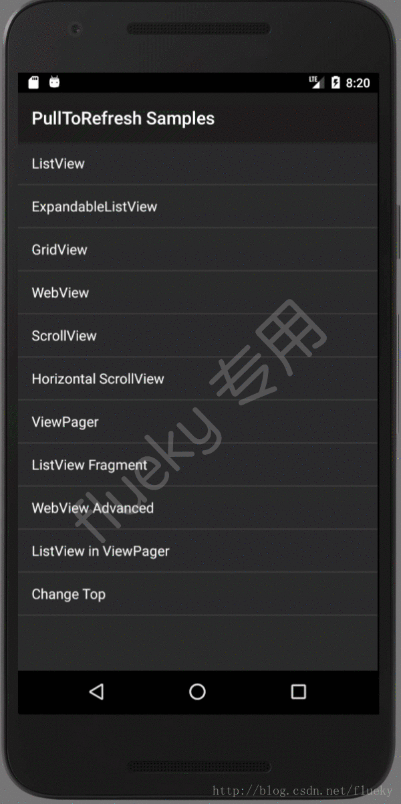

1 目标
先看看QQ空间的样式。
透明背景标题头
白色背景标题头
2 思路
滚动页面时，当背景头部消失后，标题背景变成白色。即计算滑动距离，根据距离计算需要变更标题背景的时机，标题浮动在滚动视图上面。布局有两种设计方法:
方案一：
1
2
3
4
5
6
7
8
9
10
11
12
| <RelativeLayout>
<ScrollView>
<LinearLayout>
</LinearLayout>
</ScrollView>
<LinearLayout>
</LinearLayout>
</RelativeLayout>
|
优点：标题独立于滚动视图，无需处理
缺点：滚动视图拉伸时，影响一体化体验
方案二：
1
2
3
4
5
6
7
8
9
10
11
12
| <ScrollView>
</RelativeLayout>
<LinearLayout>
</LinearLayout>
<LinearLayout>
</LinearLayout>
<RelativeLayout>
</ScrollView>
|
优点：滚动视图拉伸时，标题一起下滑。
缺点：标题同滚动视图一起滑动，需要单独处理。
这里，选择方案二的理由是，解决方案二的缺点比解决方案一的缺点容易很多。
3 实现
重写ScrollView,监听滑动距离，保持标题布局不变，并根据时机改变背景。
1
2
3
4
5
6
7
8
9
10
11
12
13
14
15
16
17
18
19
20
21
22
23
24
25
26
27
28
29
30
31
32
33
34
35
36
37
38
39
40
41
42
43
44
45
46
47
48
49
50
51
52
53
54
| @Override
protected void onScrollChanged(int l, int t, int oldl, int oldt) {
super.onScrollChanged(l, t, oldl, oldt);
if (titleView == null)
throw new IllegalStateException("titleView 不能为空");
if (headView == null)
throw new IllegalStateException("headView 不能为空");
titleView.setTranslationY(t);
if (headView.getHeight() - t < titleView.getHeight() * 1.2f) {
if (isHeadShow && mScrollStateListener != null) {
mScrollStateListener.changed(!isHeadShow);
}
isHeadShow = false;
} else if (headView.getHeight() - t > titleView.getHeight() * 1.8f) {
if (!isHeadShow && mScrollStateListener != null) {
mScrollStateListener.changed(!isHeadShow);
}
isHeadShow = true;
}
if (mScrollStateListener != null) {
float percent = 0;
if (t <= headView.getHeight() - titleView.getHeight())
percent = 1 - t * 1.0f / (headView.getHeight() - titleView.getHeight());
else if (t < 0)
percent = 1;
else percent = 0;
if (Math.abs(1 - percent) < 0.001) {
lastPercent = percent;
percent = 1;
mScrollStateListener.openPercent(percent);
} else if (Math.abs(percent) < 0.001) {
lastPercent = percent;
percent = 0;
mScrollStateListener.openPercent(percent);
}
if (Math.abs(lastPercent - percent) < 0.1)
return;
mScrollStateListener.openPercent(percent);
}
}
|
事实告诉你，实现起来很容易，重写这一个方法就好。
由于重写这个ScrollView的目的是修改标题背景，因此headView和titleView不能为空。它们存在的意义在于，获取它们的高度，根据高度和滑动距离计算变更标题背景的时机，和保持标题视图的稳定不变。
1
2
3
4
5
6
7
8
9
10
11
12
13
|
public interface ScrollStateListener {
public void openPercent(float openPercent);
public void changed(boolean isOpen);
}
|
在changed方法中，根据isOpen就可以实现QQ空间的效果。但功能并不限于此。还可以根据openPercent方法值的变化，给标题背景设置渐变过度效果。
4 结束语
这个效果可以很方便的同当下流行的下拉刷新组件结合。详情见GitHub:flueky/Android-PullToRefresh
附上结合使用后的效果图：

觉得有用？那打赏一个呗。[去打赏](/donate/)